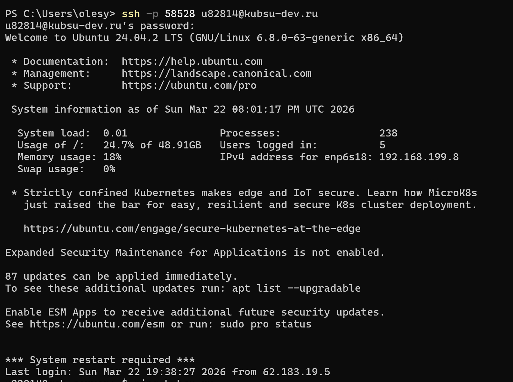
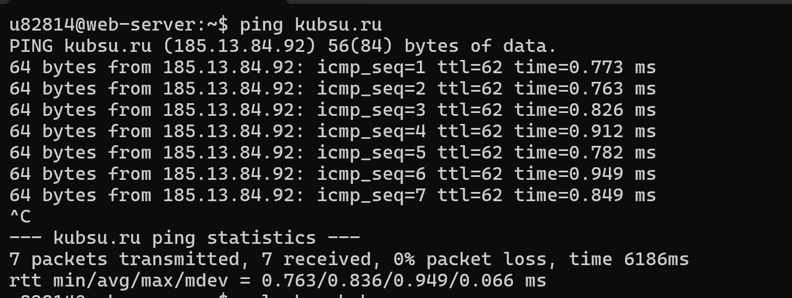
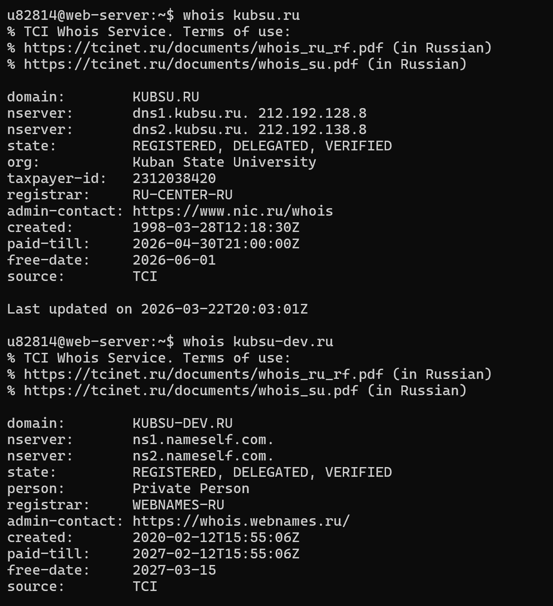
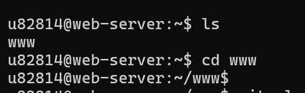
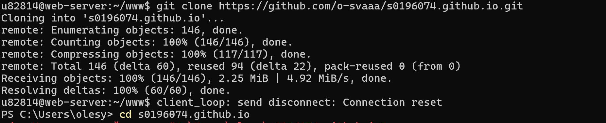
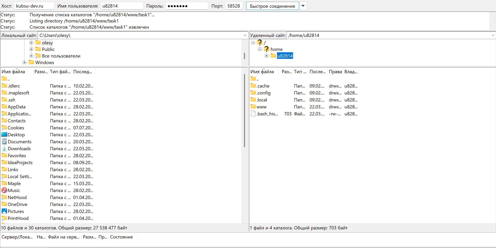

Отчет по лабораторной 1
Выполнила Сомова Олеся
Подключение через ssh
Пользователь подключился к серверу kubsu-dev.ru по SSH на нестандартном порту 58528 (сфлагом -p 58528) с именем u82814. При первом подключении система запросила подтверждение подлинности хоста — пользователь ввел yes, после чего ключ был добавлен в список известных хостов. Затем был введен пароль, и сессия успешно открылась.

ping
Пользователь выполнил команду ping kubsu.ru для проверки сетевой доступности сервера. Было отправлено 7 ICMP-пакетов, все они успешно дошли до сервера с IP-адресом 185.13.84.92. Потерь нет (0% packet loss), среднее время отклика около 1 мс — соединение стабильное и быстрое.

nslookup
Пользователь выполнил две пары команд nslookup для двух доменов: kubsu.ru и kubsu-dev.ru. nslookup domain (без типа) — запрашивает A-запись (Address). Она связывает домен с IP-адресом. Именно поэтому в ответе мы видим: Address: 185.13.84.92 для kubsu.ru и 212.192.134.135 для kubsu-dev.ru. Это нужно, чтобы браузер знал, на какой сервер в сети идти. nslookup -type=mx domain — запрашивает MX-записи (Mail Exchange). Они указывают, на какие почтовые серверы должна доставляться почта для этого домена. Для kubsu.ru ответ пришел: есть три почтовых сервера с разными приоритетами (числа 10, 20, 50 — чем меньше число, тем выше приоритет). Для kubsu-dev.ru ответа нет (No answer). Это значит, что для этого домена не настроены MX-записи, и почта на него доставляться не будет (либо будет пытаться доставиться на A-запись, но это не стандартно). Вместо этого команда показала SOA-запись (Start of Authority) — служебную информацию о зоне, где хранятся настройки домена.


whois
По выводу команд whois видно основное отличие двух доменов: Владелец (org / person): kubsu.ru принадлежит организации — Кубанский государственный университет (указан ИНН). kubsu-dev.ru принадлежит частному лицу (Private Person). DNS-серверы (nsrver): kubsu.ru использует собственные серверы университета — dns1.kubsu.ru и dns2.kubsu.ru. kubsu-dev.ru использует сторонние серверы — ns1.nameself.com и ns2.nameself.com (от регистратора). Регистратор (registrar): kubsu.ru зарегистрирован через RU-CENTER-RU. kubsu-dev.ru — через WEBNAMES-RU. Дата создания (created): kubsu.ru создан 28 марта 1998 года — очень старый домен. kubsu-dev.ru создан 12 февраля 2020 года. Оплачен до (paid-till): kubsu.ru оплачен до апреля 2026 (скоро продлевать). kubsu-dev.ru оплачен до февраля 2027.

ls и cd
Пользователь выполнил команду ls (list) и увидел, что в его домашней директории (~) есть папка www. Затем командой cd www (change directory) он перешел внутрь этой папки. Приглашение командной строки изменилось с ~$ на ~/www$, подтверждая, что теперь он находится в каталоге www. Это стандартная папка на серверах для размещения файлов сайтов.

ls и cd
Пользователь склонировал Git-репозиторий с GitHub. Команда git clone https://github.com/onigiri-basic/webbeck.git создала локальную копию проекта в папку webbeck. Процесс прошел успешно — все 8 объектов были получены, общий объем данных составил 1.82 мегабайта. После завершения пользователь снова оказался в директории ~/www, где теперь появилась новая папка webbeck с файлами проекта.

SFTP-клиент
Пользователь подключился к серверу через FileZilla по протоколу SFTP: После успешного подключения: Программа отобразила содержимое удаленной директории /home/u82814/www. В этой папке находятся два каталога: webcek и webeck, а также файлы index.js и index.php. В левой панели (локальный компьютер) видна папка назначения — /Users/miran/Desktop/Server Data.
